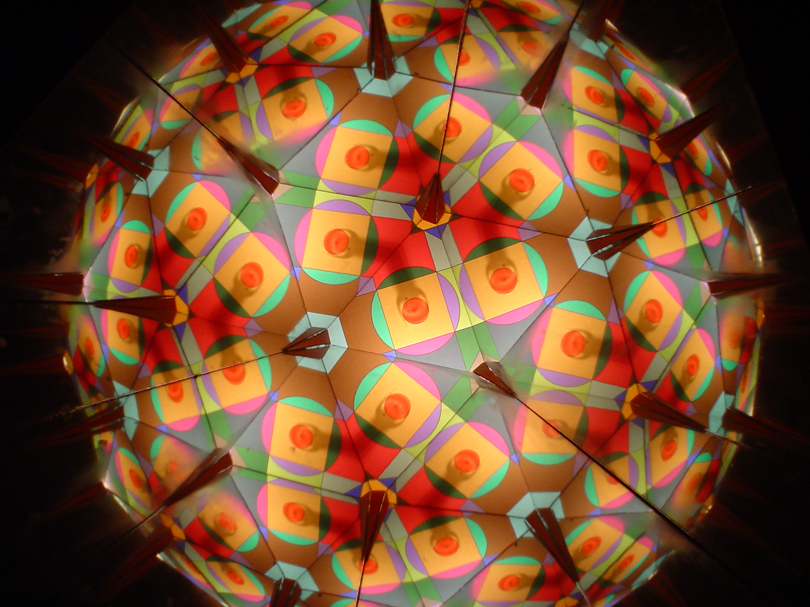
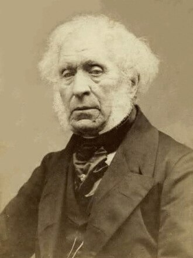
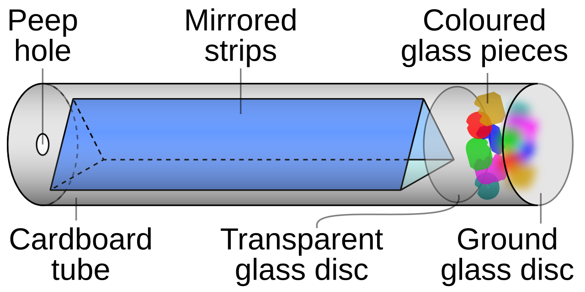

Калейдоскоп — це оптичний прилад, який створює симетричні кольорові візерунки за допомогою дзеркал і світла. Коли ми повертаємо калейдоскоп, маленькі кольорові деталі всередині змінюють своє положення, а дзеркала відображають їх багато разів, утворюючи унікальні орнаменти. Кожен новий поворот — це новий, неповторний малюнок.

Калейдоскоп був винайдений у 1816 році шотландським фізиком Девідом Брюстером. Він досліджував властивості світла та відбиття в дзеркалах і випадково відкрив ефект, який згодом став популярною іграшкою у всьому світі. Уже в перші роки після винаходу калейдоскопи стали дуже модними в Європі.

Основний принцип роботи калейдоскопа — це багаторазове відбиття світла в дзеркалах. Всередині приладу знаходяться:
Світло проходить через прозору частину, відбивається в дзеркалах і створює симетричні фігури. Через це навіть прості предмети перетворюються на складні геометричні орнаменти.